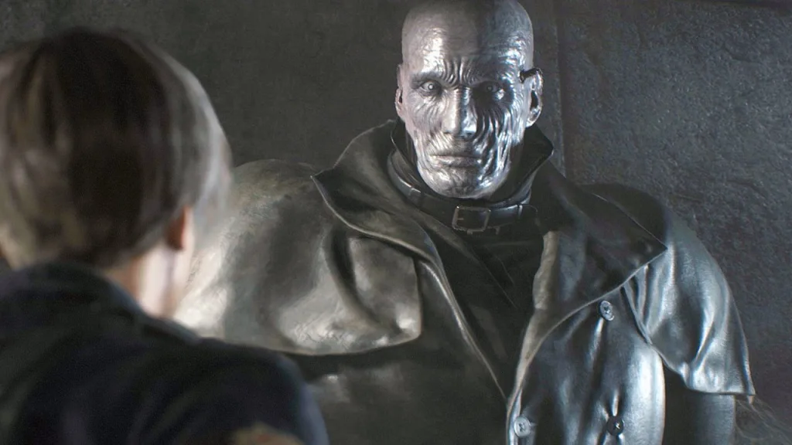

Programa que consiste em mostrar os 10 bosses mais dificies de resident evil

Resident Evil é uma franquia de videogame de survival horror desenvolvida pela Capcom, que teve seu primeiro jogo lançado em 1996. A história se passa em um mundo infestado por zumbis e outras criaturas mutantes, onde os jogadores assumem o papel de vários personagens que tentam sobreviver e descobrir a verdade por trás do surto de zumbis. A franquia é conhecida por sua jogabilidade tensa e desafiadora, narrativa imersiva e personagens memoráveis, e é considerada uma das mais populares e influentes da história dos videogames.